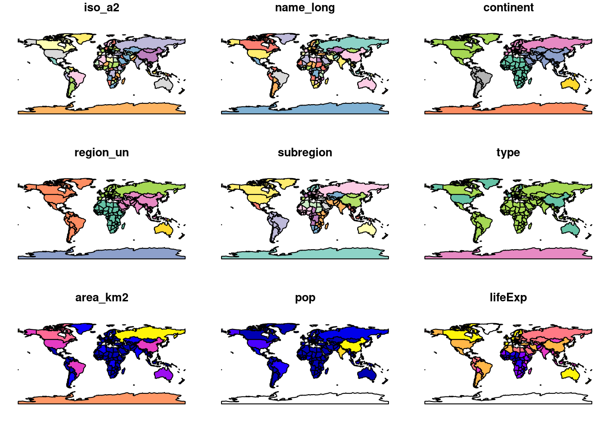
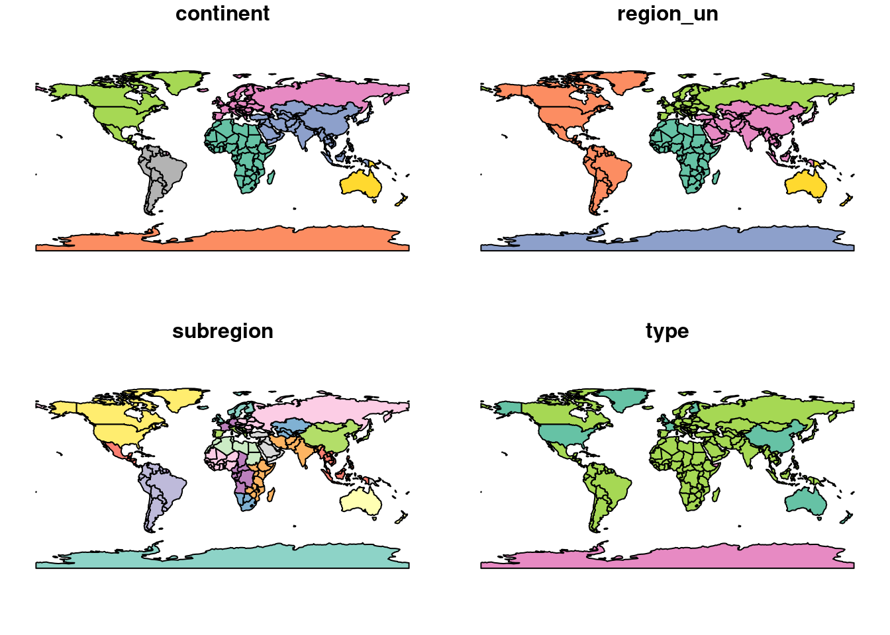
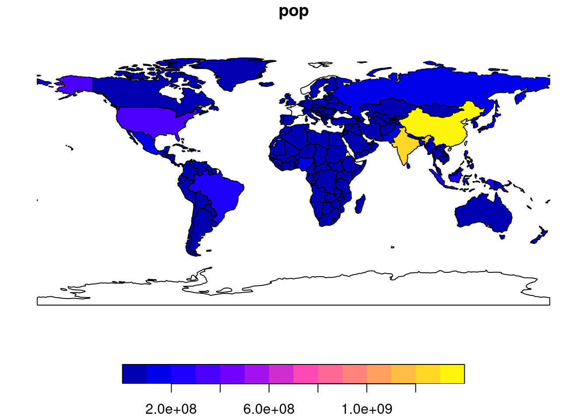
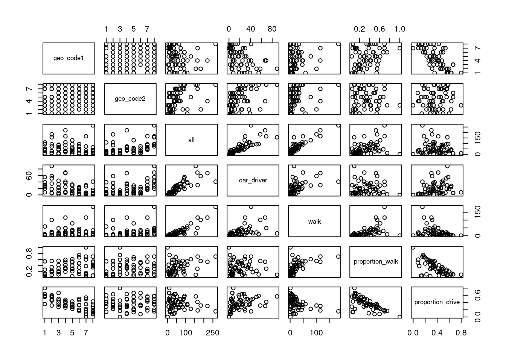
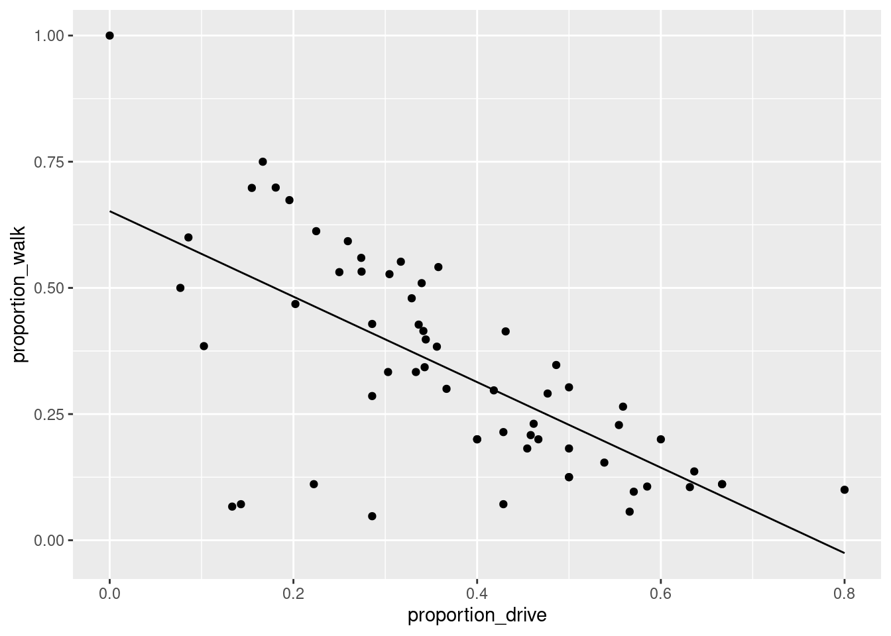
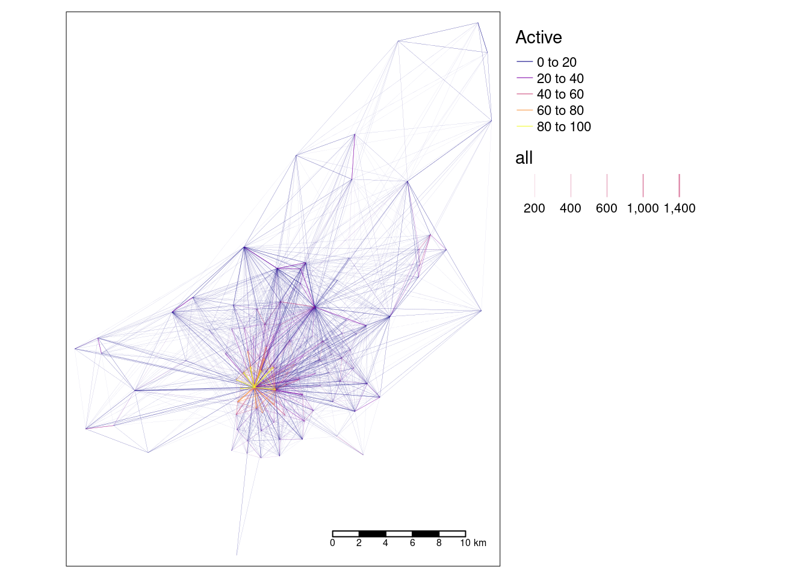
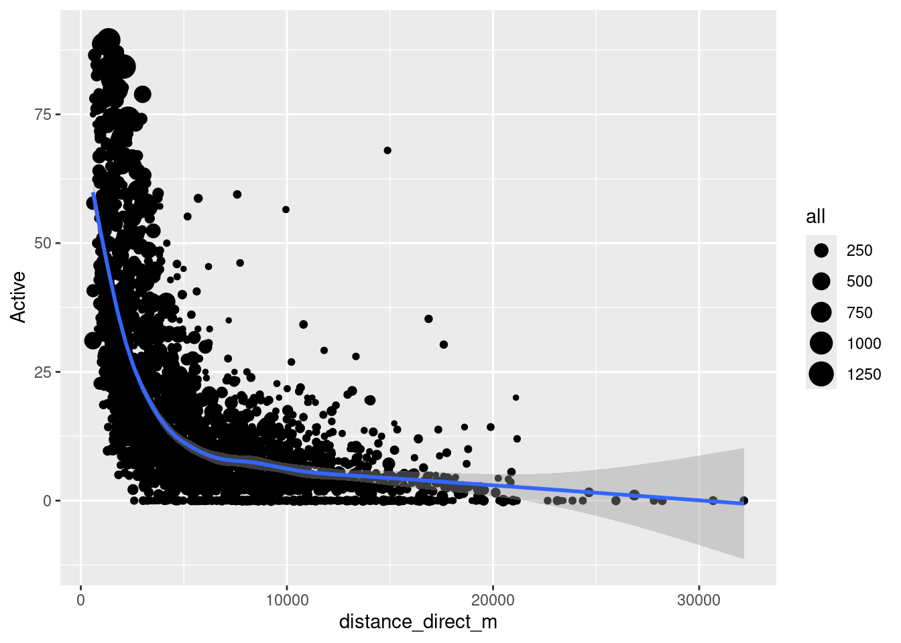

install.packages("sf") # Install a package from CRAN
remotes::install_github("Nowosad/spDataLarge") # install from GitHub using the remotes packageOrigin-destination data
1 Review Homework
You should now be familiar with the basics of R and the tidyverse. If you have not completed these tasks go back and do them first:
- Read Chapters 2, 3, and 4 of Reproducible road safety research with R
- Read Chapters 3 and 5 of R for Data Science
2 Getting started with GIS in R
Note that this practical takes sections from Chapters 2 - 8 of Geocomputation with R. You should expand your knowledge by reading these chapters in full.
Pre-requisites
You need to have a number of packages installed and loaded. Install the packages by typing in the following commands into RStudio (you do not need to add the comments after the # symbol)
If you need to install any of these packages use:
library(sf) # vector data package
library(tidyverse) # tidyverse packages- It relies on spData, which loads datasets used in the code examples of this chapter:
library(spData) # spatial data package - Check your packages are up-to-date with
update.packages() - Create an RStudio project with an appropriate name for this session (e.g.
practical2) - Create appropriate folders for code, data and anything else (e.g. images)
- Create a script called
learning-OD.R, e.g. with the following command:
dir.create("code") #
file.edit("code/learning-OD.R")2.1 Basic sf operations
We will start with a simple map of the world. Load the world object from the spData package. Notice the use of :: to say that you want the world object from the spData package.
world = spData::worldUse some basic R functions to explore the world object. e.g. class(world), dim(world), head(world), summary(world). Also view the world object by clicking on it in the Environment panel.
sf objects can be plotted with plot().
plot(world)
Note that this makes a map of each column in the data frame. Try some other plotting options
plot(world[3:6])
plot(world["pop"])
2.2 Basic spatial operations
Load the nz and nz_height datasets from the spData package.
nz = spData::nz
nz_height = spData::nz_heightWe can use tidyverse functions like filter and select on sf objects in the same way you did in Practical 1.
canterbury = nz %>% filter(Name == "Canterbury")
canterbury_height = nz_height[canterbury, ]In this case we filtered the nz object to only include places called Canterbury and then did and intersection to find objects in the nz_height object that are in Canterbury.
This syntax is not very clear. But is the equivalent to
canterbury_height = nz_height[canterbury, , op = st_intersects]There are many different types of relationships you can use with op. Try ?st_intersects() to see more. For example this would give all the places not in Canterbury
nz_height[canterbury, , op = st_disjoint]
3 Getting started with OD data
In this section we will look at basic transport data in the R package stplanr.
Load the stplanr package as follows:
library(stplanr)The stplanr package contains some data that we can use to demonstrate principles in Data Science, illustrated in the Figure below. Source: Chapter 1 of R for Data Science (Grolemund and Wickham 2016) available online.

First we will load some sample data:
You can click on the data in the environment panel to view it or use head(od_data) Now we will rename one of the columns from foot to walk
Next we will made a new dataset od_data_walk by taking od_data and piping it (%>%) to filter the data frame to only include rows where walk > 0. Then select a few of the columns and calculate two new columns proportion_walk and proportion_drive.
We can use the generic plot function to view the relationships between variables
plot(od_data_walk)
R has built in modelling functions such as lm lets make a simple model to predict the proportion of people who walk based on the proportion of people who drive.
We can use the ggplot2 package to graph our model predictions.
ggplot(od_data_walk) +
geom_point(aes(proportion_drive, proportion_walk)) +
geom_line(aes(proportion_drive, proportion_walk_predicted))
Exercises
- What is the class of the data in
od_data? - Subset (filter) the data to only include OD pairs in which at least one person (
> 0) person walks (bonus: on what % of the OD pairs does at least 1 person walk?) - Calculate the percentage who cycle in each OD pair in which at least 1 person cycles
- Is there a positive relationship between walking and cycling in the data?
- Bonus: use the function
od2line()in to convert the OD dataset into geographic desire lines
4 Processing origin-destination data in Bristol
This section is based on Chapter 12 of Geocomputation with R. You should read this chapter in full in your own time.
We need the stplanr package which provides many useful functions for transport analysis and tmap package which enables advanced mapping features.
library(stplanr)
library(tmap)We will start by loading two datasets:
od = spDataLarge::bristol_od
zones = spDataLarge::bristol_zonesExplore these datasets using the functions you have already learnt (e.g. head,nrow).
You will notice that the od datasets has shared id values with the zones dataset. We can use these to make desire lines between each zone. But first we must filter out trips that start and end in the same zone.
od_inter = filter(od, o != d)
desire_lines = od2line(od_inter, zones)Let’s calculate the percentage of trips that are made by active travel
desire_lines$Active = (desire_lines$bicycle + desire_lines$foot) /
desire_lines$all * 100Now use tmap to make a plot showing the number of trips and the percentage of people using active travel.
desire_lines = desire_lines[order(desire_lines$Active),]
tm_shape(desire_lines) + # Define the data frame used to make the map
tm_lines(col = "Active", # We want to map lines, the colour (col) is based on the "Active" column
palette = "plasma", # Select a colour palette
alpha = 0.7, # Make lines slightly transparent
lwd = "all") + # The line width (lwd) is based on the "all" column
tm_layout(legend.outside = TRUE) + # Move the ledgend outside the map
tm_scale_bar() # Add a scale bar to the map
Now that we have geometry attached to our data we can calculate other variables of interest. For example let’s calculate the distacne travelled and see if it relates to the percentage of people who use active travel.
desire_lines$distance_direct_m = as.numeric(st_length(desire_lines))Note the use of as.numeric by default st_length and many other functions return a special type of result with unit. Here we force the results back into the basic R numerical value. But be careful! The units you get back depend on the coordinate reference system, so check your data before you assume what values mean.
ggplot(desire_lines) +
geom_point(aes(x = distance_direct_m, y = Active, size = all)) +
geom_smooth(aes(x = distance_direct_m, y = Active))
The blue line is a smoothed average of the data. It shows a common concept in transport research, the distance decay curve. In this case it shows that the longer the journey the less likely people are to use active travel. But this concept applies to all kinds of travel decisions. For example you are more likely to travel to a nearby coffee shop than a far away coffee shop. Different types of trip have different curves, but most people always have a bias for shorter trips.
5 Homework
- Read Chapters 2-5 of Geocomputation with R
- Work though Sections 13.1 to 13.4 of the Transport Chapter in Geocomputation with R
- Bonus: Read more about using the tmap package
- Bonus: Read more about the ggplot2 package
- Bonus: Read Chapter 7 & 8 of Geocomputation with R
6 References
Grolemund, Garrett, and Hadley Wickham. 2016. R for Data Science. O’Reilly Media.